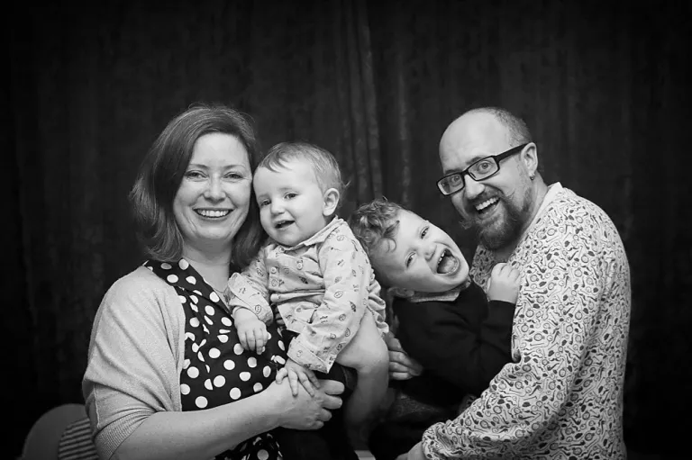

Abbots, Stephen

Hi, my name is Steve and I work in the Agapé UK head office in Birmingham working on all things IT and have been serving since 2015. Thank you very much for viewing my page, like my namesake in the Bible I have an operational role that isn’t always that exciting, although I did once get bit by a lion on a work trip, generally it’s pretty much spending time at a desk. But being part of the engine room helps enable all our field staff in their work and I can’t do that without a team of partners behind me. I encourage you to have a look around our website and see all the varied work we do.